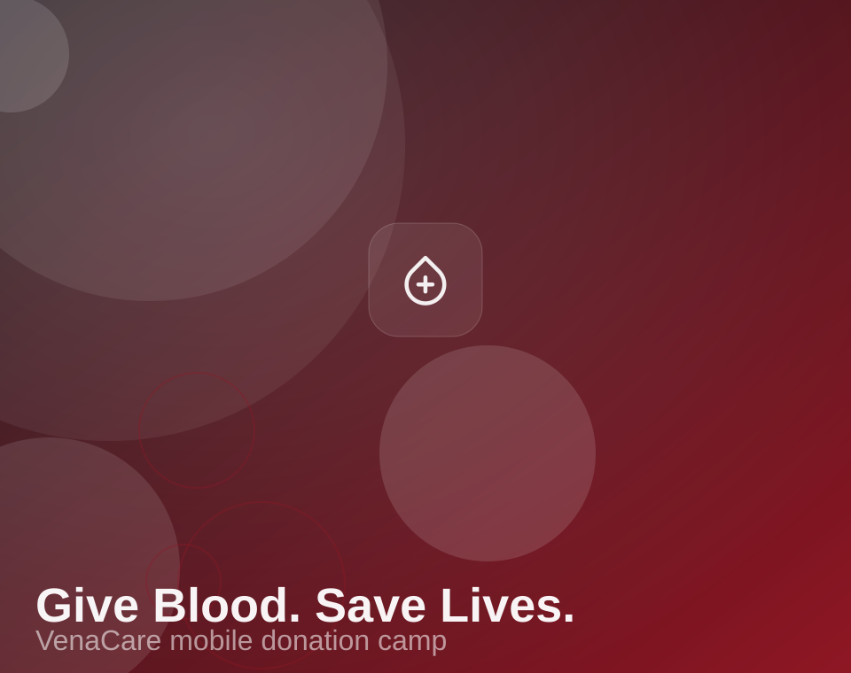

About VenaCare
We are a network of nurses, phlebotomists and volunteers who run hospital-grade blood camps on ordinary streets — and get every unit to a hospital shelf within two hours.

One rented van, forty-one donors
VenaCare began in the winter of 2019 when three volunteers borrowed a van, set up four folding beds in a community hall in Central District and registered forty-one donors in a single afternoon. Every unit was driven to the partner blood bank in a cooler carried on someone's lap.
Seven years later the cooler has become a validated cold-chain fleet, the folding beds are replaced by staffed donation stations, and the same rule still governs every camp: nothing leaves the venue without a barcoded chain of custody, a screened donor and a nurse's signature.
Today our crews run neighbourhood drives, campus festivals and corporate CSR days across the district — and our matching engine wakes compatible donors at 2 AM when a hospital calls.
Mission, vision & values
Two commitments shape every camp we run — and four values decide how we run them.
Our mission
Make safe blood donation ordinary. We remove every barrier between a willing donor and a patient in need — logistics, permits, screening, matching and follow-up — so that no request fails for want of a phone call.
Our vision
A district where blood group compatibility is a five-minute search, not a midnight phone tree — where every hospital shelf is stocked before it runs low and every donor knows exactly whose life their pint touched.
Safety without compromise
Single-use sterile kits, hospital-grade screening and validated 2–6 °C cold chain on every unit.
Donor dignity
Private interviews, encrypted health records and a recovery corner nobody is rushed out of.
Radical transparency
Organisers see live target boards; donors get certificates and transfusion alerts within 24 hours.
Community first
Camps are planned with the street, campus or factory — not dropped on them from a central office.
Our history, one camp at a time
From a borrowed van to a district-wide network — the five moments that changed how we work.
See what we run todayVenaCare is founded
Three volunteers run the first neighbourhood camp in Central District — 41 donors, one rented van and a borrowed cooler.
The mobile fleet arrives
Six fully equipped camp vans, in-house permits and insurance. We pass 100 completed drives and hire our first supervising nurse.
The matching engine goes live
10,000 verified donors, a mediated inbox that keeps personal numbers private, and a 14-minute median emergency response.
Hospitals plug in
REST API and webhooks launch for blood banks, taking our partner network past 400 organisations and adding 24/7 coordinator cover.
The network today
48,392 verified donors, 31,486 units collected, 642 camps this year — and 92% of emergency requests filled inside an hour.
The people behind every camp
Physicians, nutritionists and field operators who have between them planned more than 2,400 drives.
Donors, organisers, families
The people who run our camps and the people whose lives they change.
Ready to write
your chapter?
Sign up as a donor in two minutes, or tell us about the drive you want to run and a coordinator will call you back.